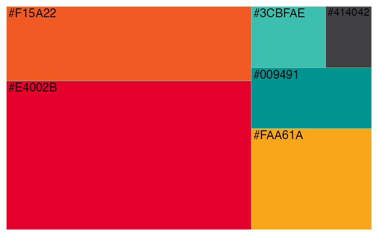
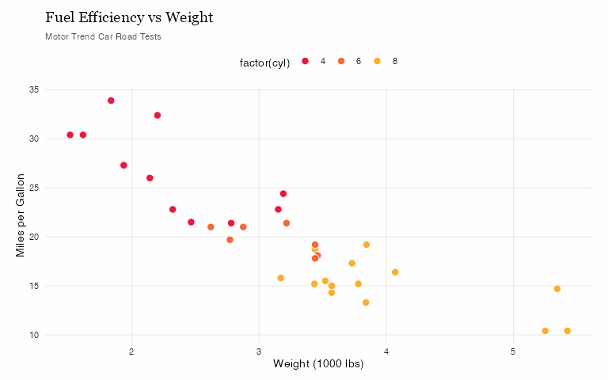
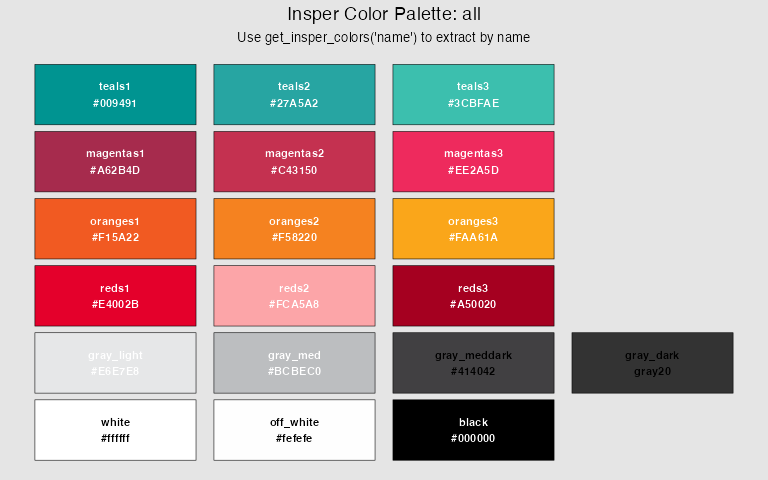
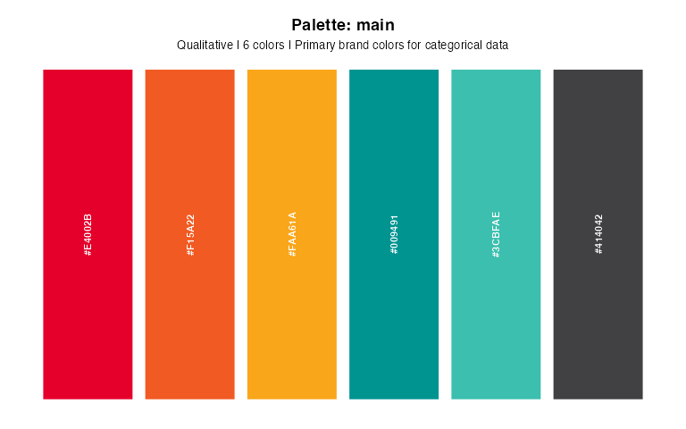

insperplot extends ggplot2 with Insper Instituto de Ensino e Pesquisa visual identity, providing custom themes, color palettes, and specialized plotting functions for academic and institutional use.
⚠️ Disclaimer
This is an unofficial package created by an Insper employee, not an official Insper product. This package is developed independently and is not endorsed, supported, or maintained by Insper Instituto de Ensino e Pesquisa. For official Insper communications and materials, please refer to Insper’s official website.
Installation
You can install the development version of insperplot from GitHub:
# install.packages("remotes")
remotes::install_github("viniciusoike/insperplot")Setup (Recommended)
For the best results with insperplot, we recommend a one-time setup:
Quick Setup Wizard
library(insperplot)
setup_insper_fonts() # Interactive guide for complete setupManual Setup
Step 1: Install Insper Fonts
insperplot uses fonts based on Insper’s official template. We include EB Garamond and Playfair Display as fallbacks for Georgia.
- Georgia (serif, primary for titles) - typically pre-installed
- Inter (sans-serif, for body text) - Google Font
- EB Garamond & Playfair Display (serif, title fallbacks) - Google
To use these fonts, visit Google Fonts and download and install “Inter”, “EB Garamond”, and “Playfair Display”.
Step 2: Install ragg Graphics Device
install.packages("ragg")Step 3: Configure RStudio (if using RStudio)
- Go to: Tools > Global Options > General > Graphics
- Set Backend to AGG
- Restart R session
Note: Positron users can skip this step since it uses ragg by default.
Quick Start
insperplot is built upon Insper’s brand colors. To improve functionality, additional palettes were created based on these basic colors.
#> insperplot 1.3.3 loaded.
#> Font setup: ?setup_insper_fonts | Device setup: ?use_ragg_device
#>
#> Attaching package: 'dplyr'
#> The following objects are masked from 'package:stats':
#>
#> filter, lag
#> The following objects are masked from 'package:base':
#>
#> intersect, setdiff, setequal, union
To use insperplot we recommend using ggplot2. The basic functions of the package are theme_insper() and the scale_*_insper_*() functions.
library(insperplot)
library(ggplot2)
library(ragg)
# Create a basic plot with Insper theme
ggplot(mtcars, aes(x = wt, y = mpg, fill = factor(cyl))) +
geom_point(color = "#ffffff", size = 3, shape = 21, alpha = 0.9) +
scale_fill_insper_d() +
theme_insper() +
labs(
title = "Fuel Efficiency vs Weight",
subtitle = "Motor Trend Car Road Tests",
x = "Weight (1000 lbs)",
y = "Miles per Gallon"
)
The package is based on Insper’s brand colors.
# View available colors
show_insper_colors()
insperplot includes several pre-defined palettes:
- main: Primary Insper colors
- reds, oranges, teals, grays: Sequential single-color gradients
- diverging, red_teal, red_teal_ext: Diverging palettes for data with a meaningful center
- bright, contrast: Qualitative palettes for categorical data
- categorical, accent: Additional color options
Use list_palettes() to see all available palettes with detailed information. To visualize the colors in each palette, use show_insper_palette():

Main Functions
-
theme_insper(): Apply Insper’s visual identity to ggplot2 plots. -
scale_color_insper_d()/scale_fill_insper_d(): Discrete color scales. -
scale_color_insper_c()/scale_fill_insper_c(): Continuous color scales. -
show_insper_palette(): Visualize available color palettes. -
insper_*(): Specialized plotting functions.
Documentation
For detailed documentation and examples, visit the package website.
Contributing
Contributions are welcome! Please see CONTRIBUTING.md for guidelines.
Acknowledgments
This package was inspired by excellent ggplot2 theme packages including:
- hrbrthemes by Bob Rudis (note: removed from CRAN in 2025)
- bbplot by BBC Data Team
- ggthemes by Jeffrey Arnold